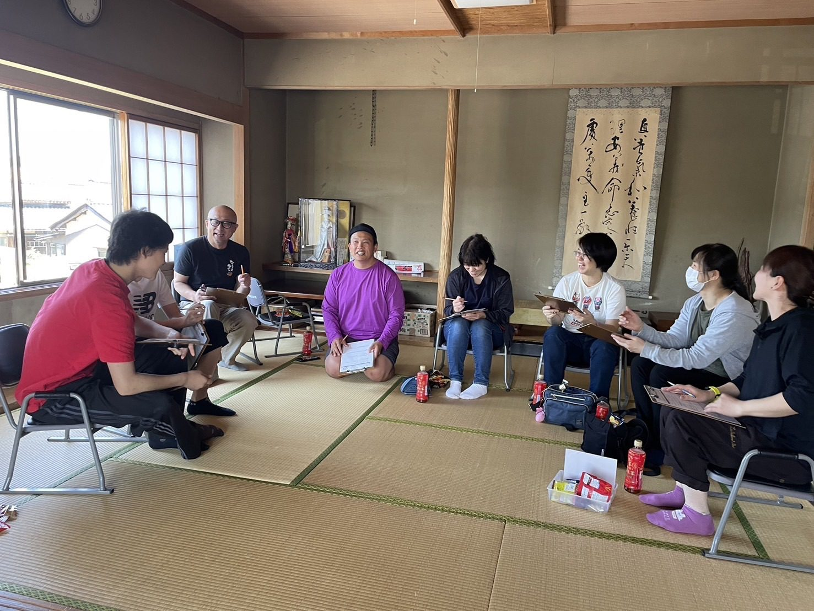
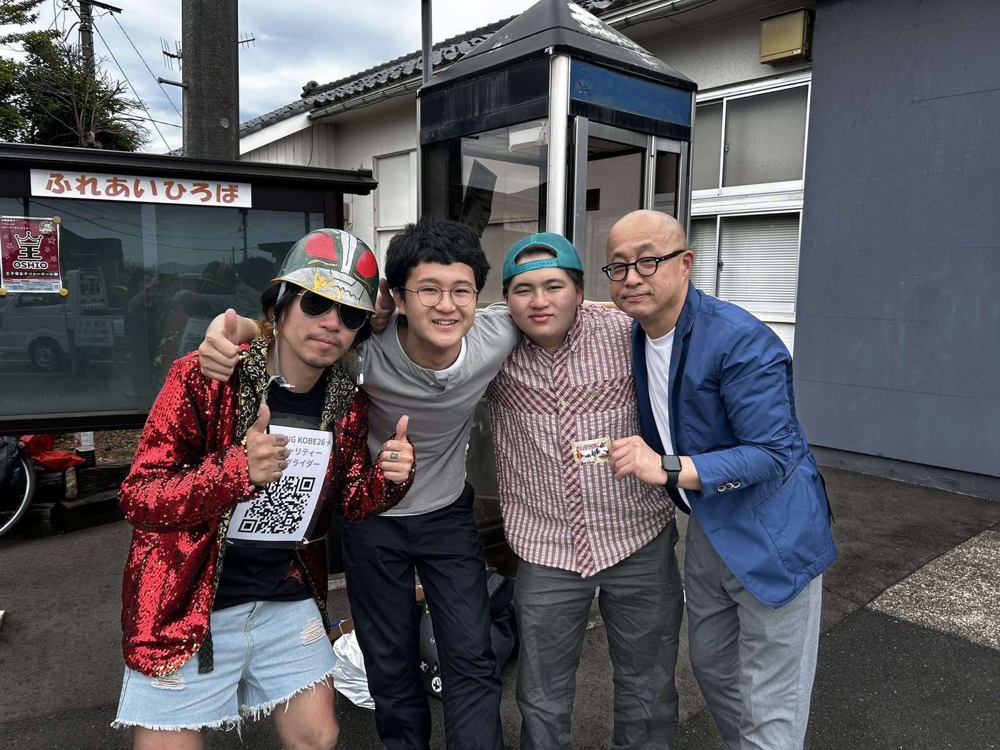
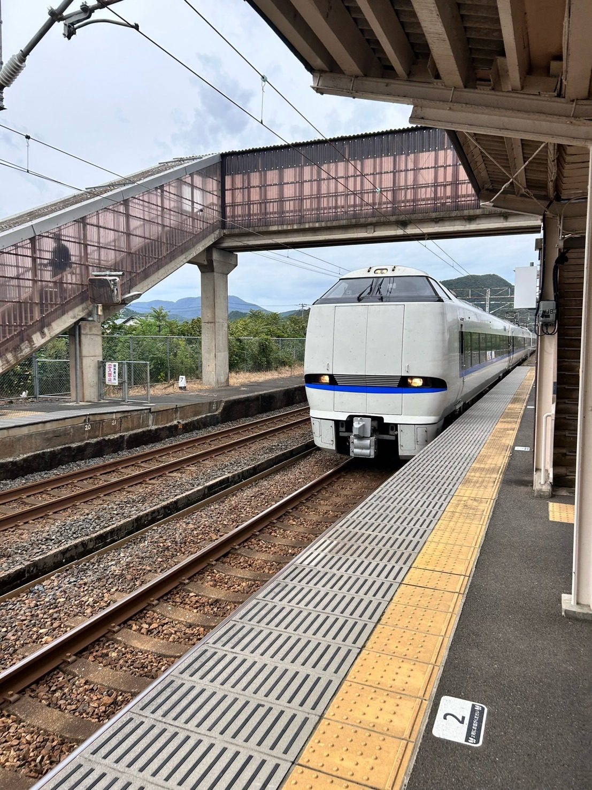

20代
（株）ラインズFBC
パソコン通信を使った在宅学習システムの県内展開、マルチメディアシステムの企画提案。将来のネット社会を予見した、当時としては最先端のお仕事でした。


生まれも育ちも王子保・今宿町。
祖父母がこの地で商売を始め、その孫として61年をここで生きてきました。呉服雑貨店や新聞販売店を営む家に育ち、地域の皆さんのおかげでご飯を食べさせてもらいました。
その恩返しのつもりで、幼稚園後援会長・PTA・スポ少・自治振興会・公民館と、20数年間にわたり地域活動を続けてきました。
しかし、活動を重ねるほど、王子保の活気がなくなっていくことを強く感じるようになりました。
孫のオムツを替えながら、ふと思いました——「この子たちが大きくなるころ、ここはどうなっているんだろう」
そんなとき、高校生と高齢者が真剣に政治を語る光景に出会いました。胸が熱くなりました。そして、確信しました。
「政治を自分ごとにすれば、町は盛り上がる」
人生二周目は、すべてをここ王子保、そして越前市に捧げます。
詳しいプロフィールを見る県外に行きたくて仕方なかったのですが、神様は許しませんでした。
パソコン通信を使った在宅学習システムの県内展開、マルチメディアシステムの企画提案。将来のネット社会を予見した、当時としては最先端のお仕事でした。
武生市からの開局メンバーとして、いろいろなことをさせていただきエリア拡大に汗をかきました。
親から引き継ぎ、ますます地域密着なお仕事となりました。
コロナ禍の影響で思うように活動できない時期もありましたが、2期にわたり務めました。
40年に一度の改修工事を経験し、行政の仕組み・取り組みも学ばせていただきました。（2026年4月退任）


朝のホーム、通学する子どもたち、車で行き交う人の流れ。毎日見ている景色の中に、地域の変化があります。
王子保で暮らす人の声を聞き、足元の課題をひとつずつ見つめることから、まちづくりを始めます。
ここが好きだから出る。生活と政治がつながっている実感を、王子保から越前市へ広げます。
政治やまちづくりを自分事として関わる人を増やし、ひとり一人の声を拾い、解決策を提示できるしくみをつくる。
安心安全な居住・子育て環境を整え、スマホを開くたびに「生活と政治がつながっている」と実感できる、強い民主主義の道具を育てます。
カギは「見える化」「遊び心・わくわく感」「お得感」「地域商業」。このまちを徹底攻略するための最初の約束です。
市民参画型予算や市民会議、街角議員カフェなどを通じ、市民と政治を語り合う参加の舞台をつくります。
孤独を溶かす地域共生プラットフォームとして、子ども・高齢者・若者が自然に顔を合わせる拠点を各地区に配置します。
地域の自然や文化伝統をフィールドに、子どもたちが自ら問いを立てて解決する探求塾を公的に支援します。